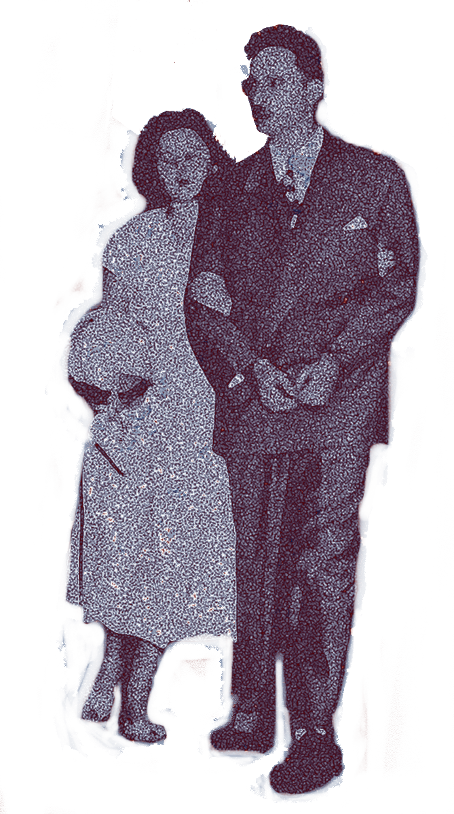
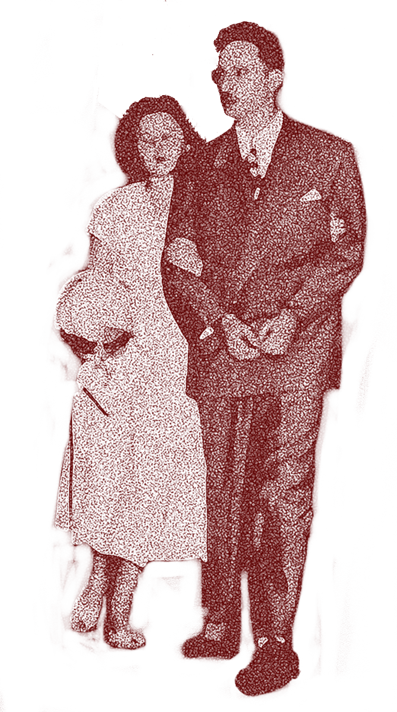

Back
Back

Audio Archive / Ηχητικό Αρχείο


IN 1953, A NEW YORK SPY TEAM, JULIUS AND ETHEL ROSENBERG WERE SENTENCED TO DEATH IN THE ELECTRIC CHAIR FOR THEIR INVOLVMENT WITH THE SMUGGLING OF ATOM BOMB RELATED SECRETS TO THE RUSSIANS. DESPITE WIDESPREAD PROTESTS AND CALLS FOR CLEMENCY NATIONWIDE, THE ROSENBERGS WERE EXECUTED AS PLANNED AT SING SING PRISON.
ΤΟ 1953, ΜΙΑ ΟΜΆΔΑ ΚΑΤΑΣΚΌΠΩΝ ΤΗΣ ΝΈΑΣ ΥΌΡΚΗΣ, Ο ΤΖΟΎΛΙΟΥΣ ΚΑΙ Η ΈΘΕΛ ΡΌΖΕΝΜΠΕΡΓΚ ΚΑΤΑΔΙΚΑΣΤΗΚΑΝ ΣΕ ΘΑΝΑΤΟ ΣΤΗΝ ΗΛΕΚΤΡΙΚΗ ΚΑΡΕΚΛΑ ΓΙΑ ΤΗ ΣΥΜΜΕΤΟΧΉ ΤΟΥΣ ΣΤΟ ΔΙΑΜΟΙΡΑΣΜΟ ΜΥΣΤΙΚΩΝ ΤΗΣ ΑΤΟΜΙΚΗΣ ΒΟΜΒΑΣ ΠΡΟΣ ΣΤΟΥΣ ΡΩΣΟΥΣ. ΠΑΡΑ ΤΙΣ ΕΚΤΕΤΑΜΕΝΕΣ ΔΙΑΜΑΡΤΥΡΙΕΣ ΚΑΙ ΤΙΣ ΕΚΚΛΗΣΕΙΣ ΓΙΑ ΕΠΙΕΙΚΕΙΑ ΣΕ ΕΘΝΙΚΟ ΕΠΙΠΕΔΟ, ΟΙ ΡΟΖΕΝΜΠΕΡΓΚ ΕΚΤΕΛΕΣΤΗΚΑΝ ΟΠΩΣ ΕΊΧΕ ΠΡΟΓΡΑΜΜΑΤΙΣΤΕΙ ΣΤΗ ΦΥΛΑΚΗ SING SING.